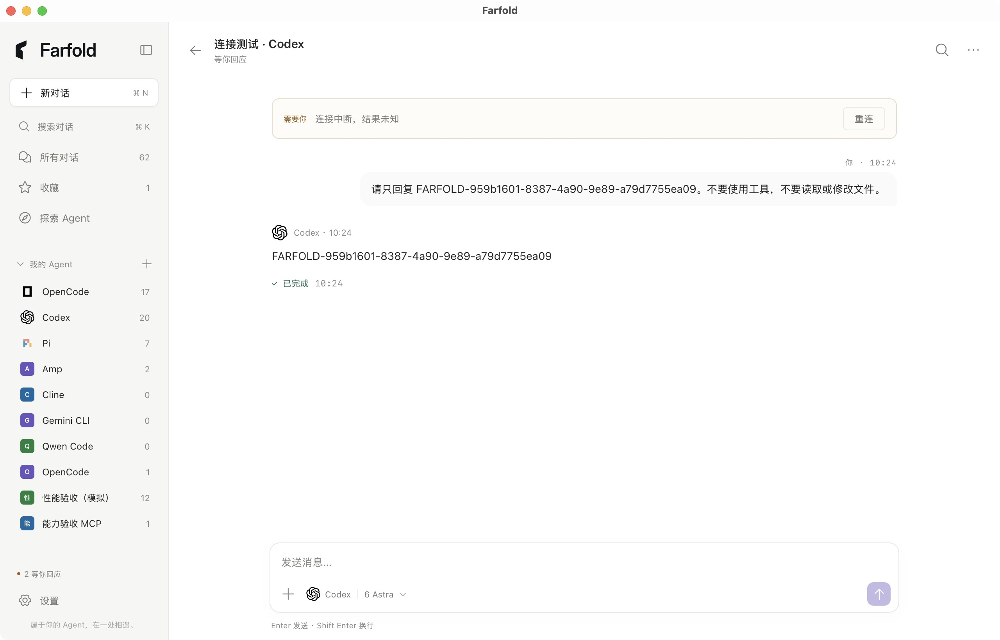

1. 同一个对象在不同入口换了含义
“我的 Agent”实际进入按 Agent 筛选的对话列表；设置中又出现完整 Agent 目录。选择菜单里两个 OpenCode 缺少清楚的区别。
需要明确：选谁做事、管理谁、找谁的对话，是三个不同动作。
现有功能已有真实基础。主要断点在于：对象与页面职责交叉、不同入口规则不一、状态含义混杂，以及用户离开后的保留与返回规则不完整。
让用户在一个桌面工作台里选用合适的 Agent 完成事情，清楚掌握进展、处理决定、使用结果，并能回来继续。
保留当前边界：Farfold 提供统一界面与管理；外部 Agent 负责自己的执行、工具、账号和历史。普通对话无需先选项目；LifeModel 当前未启用。
“我的 Agent”实际进入按 Agent 筛选的对话列表；设置中又出现完整 Agent 目录。选择菜单里两个 OpenCode 缺少清楚的区别。
需要明确：选谁做事、管理谁、找谁的对话，是三个不同动作。
Qwen 不支持 API 配置，却仍可选中该方式；下一页同时要求兼容 API 并禁用测试和继续。认证失败也没有直接对应的处理入口。
需要统一：前置能力说明、针对失败的下一步、完成后返回原任务。
同一条历史对话正文显示“已完成”，顶部却显示“结果未知／需要你／重连”。“已连接”也不能说明账号和实际任务可用。
需要分别表达：准备情况、任务结果、历史能否继续。
本轮确认跨页面草稿保留；源码仍只有内存草稿，文件意见随面板卸载丢失。重启后的保留承诺尚未完整定义。
需要统一：正文、资料选择、意见和准备目标的生命周期。
从 Codex 入口再筛选 Pi 得到空列表，而侧栏 Pi 明明有对话。源码中手动归档也可能把活动事项从全局入口隐藏。
需要保证：筛选条件可解释，整理动作不使待处理工作失去入口。
定位涵盖交流、阅读、写作与编程，但主要验收更偏接入和代码任务。目录收录、连接成功、短回复与完整能力是不同证据。
需要按真实任务检验价值，并在选择前说明当前限制。
展开查看成功条件与退出规则。这是产品定义建议，不是十条旅程均已通过的声明。
成功：从新对话表达任务，已有设置可复用，缺条件时进入对应准备。
失败与返回：保留原稿、选择和资料；说明缺项，补齐后回到原输入。
成功：知道实际用途与限制，连续处理程序、账号与配置。
失败与返回：不支持的路线提前说明；重试针对失败步骤，返回仍保留目标 Agent。
成功：复用已有权益，必要时去准确的登录或密钥入口。
失败与返回：认证、服务不兼容、缺少配置分别处理；保存服务不自动改变旧对话。
成功：明确 Agent、服务和模型；首条接纳后保持既定身份。建议短测试可选。
失败与返回：确定没发出可修改重试；是否发出不确定时不自动重发；补条件后保留原稿。
成功：清楚本次给了哪些资料，回复与成果可使用，反馈进入当前对话。
失败与返回：指出具体不可读的对象，保留其余输入；关闭右栏不丢未提交意见。
成功：知道谁在等什么、决定影响什么，处理后继续对应工作。
失败与返回：发送失败保留回答；已失效解释原因；切走和整理不隐藏待回应事项。
成功：切换不打断工作，全局能找到进行中和待回应对话。
失败与返回：停止得到确认才显示已停止；不确定时说明范围，保留待发内容。
成功：按标题、Agent、分组与状态找回工作，整理不改变执行身份。
失败与返回：显示有效筛选条件，同维度不暗中互斥；返回保留列表位置。
成功：选择、查找、预览、加入，明确可继续、仅查看和已加入。
失败与返回：找不到、不支持和读取失败分别处理；不自动发送，不制造空白成功历史。
成功：建议正常重启后保留未发送投入；历史按真实能力恢复，继续时仍用原选择。
失败与返回：保留已有可见内容并说明原因；不静默换模型、自动重发或清空历史。
| 页面 | 唯一主要职责 | 规则 |
|---|---|---|
| 新对话／当前对话 | 表达任务、推进工作、回应与继续 | 按需准备，原输入始终可找回 |
| 右侧内容 | 查看成果并把意见带回对话 | 说明历史内容与当前文件的区别 |
| 所有对话／动态 | 寻找、整理、处理待回应工作 | 同维度筛选只有一种解释，整理不隐藏待办 |
| 探索 Agent | 发现并比较适用范围 | 进入所选 Agent 的同一套准备流程 |
| 我的 Agent／详情 | 继续准备和管理已添加的 Agent | “按 Agent 找对话”另以筛选入口表达 |
| 设置 | 通用偏好与可复用 API 服务 | 不再复制一套发现目录；保留实际能力差异 |
保留现有三栏、统一聊天与独立分组基础。以上是职责调整建议，不是要求整体重写。
允许直接做实际任务，短测试作为诊断工具。
首次真实任务可能暴露缺项，必须由保留草稿和针对性恢复承接。
“回来继续”包含草稿、资料选择与未提交意见。
明确保留与删除范围，不因此复制第二套 Agent 消息历史。
按 Agent 与功能说明真实可用范围。
目录收录、连接、短回复、工具使用与恢复分别验证。
首条消息被接纳后固定 Agent、服务、模型与推理选择，已有契约规定；应先遵守，不能把现有可编辑按钮当成新的产品决定。
状态含义、身份稳定、未发送投入保留，以及待回应事项可找回。
统一准备入口、失败下一步与返回规则，用实际任务走通全过程。
明确页面职责、合并重复入口、统一术语和视觉层级。
这是评审排序，后续实施仍应进入现有唯一活动计划，并在安装版逐项验收。

当前契约仍以 PRODUCT.md 为准。报告整理的是冲突与建议，不替代批准、不降低原有要求，也不以文档完成代替功能修复。